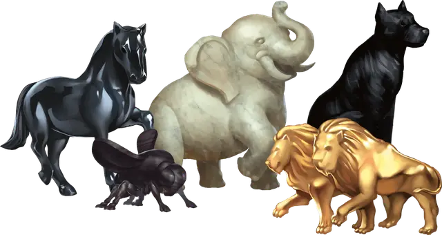

Статуэтка чудесной силы
Figurine of Wondrous Power
Чудесный предмет, редкость варьируется (зависит от статуэтки)

Статуэтка чудесной силы это небольшая статуэтка зверя, помещающаяся в карман. Если вы действием произнесёте командное слово и бросите статуэтку на расстояние до 60 футов, статуэтка станет живым существом. Если пространство, в котором существо должно появиться, занято другим существом или предметом, или если для этого существа просто нет пространства, статуэтка не становится существом.
Существо дружественно по отношению к вам и вашим спутникам. Оно понимает ваши языки и подчиняется устным командам. Если вы не отдаёте команды, существо обороняется, но других действий не совершает.
Животное существует в течение времени, зависящего от вида статуэтки. В конце этого периода животное вновь становится статуэткой. Оно становится статуэткой преждевременно, если его хиты опускаются до 0, или если вы действием произнесёте командное слово, касаясь его. Когда существо становится статуэткой, её свойства нельзя использовать повторно, пока не пройдёт определённое количество времени, специфичное для каждой статуэтки.
Бронзовый грифон (редкая). Эта бронзовая статуэтка грифона, стоящего на задних лапах. Она становится грифоном на 6 часов. Её нельзя использовать повторно, пока не пройдёт 5 дней.
Золотые львы (редкая). Эти золотые статуэтки львов всегда создаются парами. Вы можете использовать одну статуэтку или сразу две одновременно. Каждая становится львом на 1 час. Статуэтку нельзя использовать повторно, пока не пройдёт 7 дней.
Костяные козлы (редкая). Эти статуэтки козлов из слоновой кости всегда создаются по три штуки. Каждый козёл имеет уникальную внешность, и функционирует по-своему. Вот их свойства:
- Козёл путешествия может стать Большим козлом со статистикой ездовой лошади. У него есть 24 заряда, и каждый час или его часть, пока козёл остаётся животным, расходуется 1 заряд. Пока у него есть заряды, вы можете его использовать так часто, как вам вздумается. Когда у него кончаются заряды, он становится статуэткой и не может использоваться, пока не пройдёт 7 дней, после чего он восстанавливает все свои заряды.
- Козёл перевозки становится гигантским козлом на 3 часа. Его нельзя использовать повторно, пока не пройдёт 30 дней.
- Козёл ужаса становится гигантским козлом на 3 часа. Он не может атаковать, но вы можете брать его рога и использовать их в качестве оружия. Один рог становится длинным копьём +1, а другой становится длинным мечом +2. Рог берётся действием, и оружие исчезает, когда козёл становится статуэткой, вновь превращаясь в рог. Кроме того, козёл излучает ауру ужаса с радиусом 30 футов, когда вы на нём едете. Все враждебные вам существа, начинающие ход в ауре, должны преуспевать в спасброске Мудрости Сл 15, иначе они станут испуганными козлом на 1 минуту, или пока козёл не станет статуэткой. Испуганное существо может повторять спасбросок в конце каждого своего хода, оканчивая эффект на себе при успехе. Успешно спасшееся существо получает иммунитет к ауре козла на следующие 24 часа. Статуэтку нельзя использовать повторно, пока не пройдёт 15 дней.
Мраморный слон (редкая). Эта мраморная статуэтка примерно 4 дюйма в высоту и длину. Она становится слоном на 24 часа. Её нельзя использовать повторно, пока не пройдёт 7 дней.
Обсидиановый скакун (очень редкая). Эта лошадь из полированного обсидиана становится кошмаром на 24 часа. Кошмар сражается только чтобы защитить самого себя. Его нельзя использовать повторно, пока не пройдёт 5 дней.
Если у вас доброе мировоззрение, каждый раз, когда вы отдаёте приказ, в том числе приказ вернуться в форму статуэтки, у статуэтки есть 10-процентный шанс, что она проигнорирует его. Если вы едете верхом на кошмаре, когда он игнорирует вас, вы с ним мгновенно переноситесь в случайное место на плане Гадес, где он вновь становится статуэткой.
Ониксовая собака (редкая). Эта ониксовая статуэтка становится мастифом на 6 часов. У мастифа Интеллект 8, и он может говорить на Общем. Он также обладает тёмным зрением в пределах 60 футов и может видеть невидимых существ и предметы в пределах этого диапазона. Его нельзя использовать повторно, пока не пройдёт 7 дней.
Серебряный ворон (необычная). Эта серебряная статуэтка становится вороном на 12 часов. Её нельзя использовать повторно, пока не пройдёт 2 дня. Пока статуэтка находится в форме ворона, она позволяет неограниченно накладывать на неё заклинание почтовое животное [animal messenger].
Серпентиновая сова (редкая). Эта серпентиновая статуэтка становится гигантской совой на 8 часов. Её нельзя использовать повторно, пока не пройдёт 2 дня. Сова может телепатически общаться с вами на любом расстоянии, если вы с ней находитесь на одном плане существования.
Эбеновая муха (редкая). Эта статуэтка из чёрного дерева похожа на обычную муху. Она становится гигантской мухой на 12 часов и на ней можно летать как на верховом животном. Её нельзя использовать повторно, пока не пройдёт 2 дня.